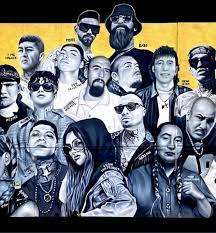
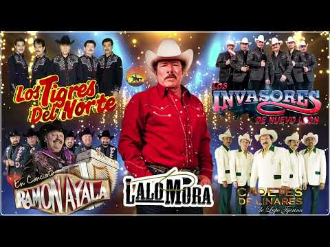

Hip-Hop

En la década de 1990, el hip hop mexicano experimentó un auge en popularidad. Grupos como Control Machete, Cypress Hill y Molotov alcanzaron un éxito comercial generalizado, llevando el rap mexicano a un público más amplio. Este período también vio el surgimiento de raperas como Akwid y La Mala Rodríguez, quienes desafiaron las normas de género en la escena musical predominantemente masculina.
Corridos

Los corridos alterados han sido objeto de mucha controversia debido a su contenido gráfico y su asociación con la violencia. Sin embargo, también han ganado una gran popularidad entre los jóvenes mexicanos y latinos en los Estados Unidos.